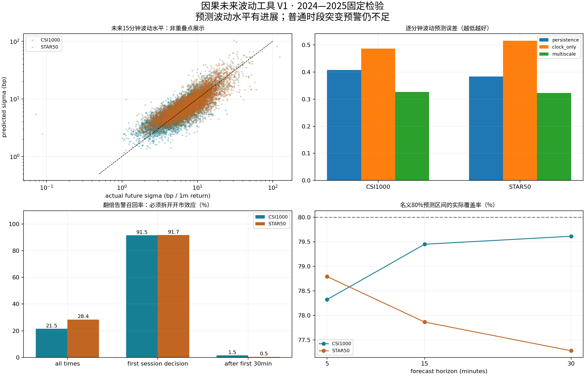

2021—2022拟合，2023校准，2024—2025固定重复检验。目标是未来5/15/30分钟的实现波动，而非涨跌方向。过去窗口与未来窗口不重叠，跨午休/隔夜不输出。

准确率、precision、recall与时间占比以下均为百分数；log误差为无量纲。三桶准确率不等于高桶召回率。
| symbol | horizon | sampling | model | rows | log_sigma_rmse | median_absolute_factor_error | spearman | bucket_accuracy | balanced_accuracy | actual_high_share | high_precision | high_recall | predicted_high_time_share |
|---|---|---|---|---|---|---|---|---|---|---|---|---|---|
| 000852.SH | 15 | dense | multiscale | 101850 | 0.3265 | 1.2393 | 0.8007 | 74.8336 | 55.7672 | 68.0736 | 83.2871 | 91.8653 | 75.0849 |
| 000852.SH | 15 | dense | persistence | 101850 | 0.4073 | 1.2890 | 0.7133 | 71.4541 | 55.1974 | 68.0736 | 82.6042 | 86.8230 | 71.5503 |
| 000852.SH | 15 | dense | clock_only | 101850 | 0.4862 | 1.3654 | 0.4033 | 65.7054 | 39.7879 | 68.0736 | 72.2418 | 89.4466 | 84.2857 |
| 000688.SH | 15 | dense | multiscale | 101850 | 0.3229 | 1.2285 | 0.8312 | 71.0103 | 63.5673 | 54.0952 | 82.3478 | 86.5925 | 56.8837 |
| 000688.SH | 15 | dense | persistence | 101850 | 0.3833 | 1.2629 | 0.7660 | 68.3152 | 61.7559 | 54.0952 | 78.6233 | 84.1658 | 57.9087 |
| 000688.SH | 15 | dense | clock_only | 101850 | 0.5157 | 1.3975 | 0.4131 | 48.7148 | 40.8756 | 54.0952 | 69.1513 | 60.2639 | 47.1429 |
阈值为预测概率≥50%；first_decision是9:31/13:01，其余条件不能与它混为任意时刻突发预测。密集窗口重叠，计数是预测时点，不是独立冲击次数。
| symbol | horizon | sampling | segment | factor | rows | events | alerts | hits | precision | recall | alert_time_share | false_positive_rate |
|---|---|---|---|---|---|---|---|---|---|---|---|---|
| 000852.SH | 15 | dense | all | 2 | 101850 | 3394 | 772 | 731 | 94.6891 | 21.5380 | 0.7580 | 0.0416 |
| 000852.SH | 15 | dense | first_decision | 2 | 970 | 496 | 466 | 454 | 97.4249 | 91.5323 | 48.0412 | 2.5316 |
| 000852.SH | 15 | dense | first_30min | 2 | 29100 | 1893 | 741 | 709 | 95.6815 | 37.4538 | 2.5464 | 0.1176 |
| 000852.SH | 15 | dense | after_30min | 2 | 72750 | 1501 | 31 | 22 | 70.9677 | 1.4657 | 0.0426 | 0.0126 |
| 000852.SH | 15 | dense | quiet_after_30min | 2 | 22328 | 1107 | 30 | 21 | 70.0000 | 1.8970 | 0.1344 | 0.0424 |
| 000688.SH | 15 | dense | all | 2 | 101850 | 2673 | 832 | 760 | 91.3462 | 28.4325 | 0.8169 | 0.0726 |
| 000688.SH | 15 | dense | first_decision | 2 | 970 | 456 | 453 | 418 | 92.2737 | 91.6667 | 46.7010 | 6.8093 |
| 000688.SH | 15 | dense | first_30min | 2 | 29100 | 1592 | 819 | 755 | 92.1856 | 47.4246 | 2.8144 | 0.2327 |
| 000688.SH | 15 | dense | after_30min | 2 | 72750 | 1081 | 13 | 5 | 38.4615 | 0.4625 | 0.0179 | 0.0112 |
| 000688.SH | 15 | dense | quiet_after_30min | 2 | 33464 | 814 | 7 | 3 | 42.8571 | 0.3686 | 0.0209 | 0.0123 |
5/15/30分钟全部指标 · 2/3/4倍及普通时段 · 非重叠全相位敏感性 · 误差区块复核 · 预测区间覆盖 · 来源与公式核验